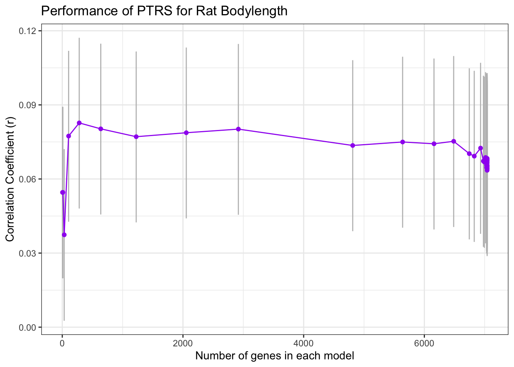

Plot_Correlations
sabrina-mi
2022-07-11
Last updated: 2022-07-18
Checks: 6 1
Knit directory: RatXcan_Training/
This reproducible R Markdown analysis was created with workflowr (version 1.6.2). The Checks tab describes the reproducibility checks that were applied when the results were created. The Past versions tab lists the development history.
The R Markdown is untracked by Git. To know which version of the R
Markdown file created these results, you’ll want to first commit it to
the Git repo. If you’re still working on the analysis, you can ignore
this warning. When you’re finished, you can run
wflow_publish to commit the R Markdown file and build the
HTML.
Great job! The global environment was empty. Objects defined in the global environment can affect the analysis in your R Markdown file in unknown ways. For reproduciblity it’s best to always run the code in an empty environment.
The command set.seed(20220711) was run prior to running
the code in the R Markdown file. Setting a seed ensures that any results
that rely on randomness, e.g. subsampling or permutations, are
reproducible.
Great job! Recording the operating system, R version, and package versions is critical for reproducibility.
Nice! There were no cached chunks for this analysis, so you can be confident that you successfully produced the results during this run.
Great job! Using relative paths to the files within your workflowr project makes it easier to run your code on other machines.
Great! You are using Git for version control. Tracking code development and connecting the code version to the results is critical for reproducibility.
The results in this page were generated with repository version 97b4b7f. See the Past versions tab to see a history of the changes made to the R Markdown and HTML files.
Note that you need to be careful to ensure that all relevant files for
the analysis have been committed to Git prior to generating the results
(you can use wflow_publish or
wflow_git_commit). workflowr only checks the R Markdown
file, but you know if there are other scripts or data files that it
depends on. Below is the status of the Git repository when the results
were generated:
Ignored files:
Ignored: .Rproj.user/
Untracked files:
Untracked: .DS_Store
Untracked: .gitignore
Untracked: analysis/Plot_Correlations.Rmd
Note that any generated files, e.g. HTML, png, CSS, etc., are not included in this status report because it is ok for generated content to have uncommitted changes.
There are no past versions. Publish this analysis with
wflow_publish() to start tracking its development.
Setup
library(tidyverse)── Attaching packages ─────────────────────────────────────── tidyverse 1.3.0 ──✔ ggplot2 3.3.6 ✔ purrr 0.3.4
✔ tibble 3.0.4 ✔ dplyr 1.0.2
✔ tidyr 1.1.2 ✔ stringr 1.4.0
✔ readr 1.4.0 ✔ forcats 0.5.0── Conflicts ────────────────────────────────────────── tidyverse_conflicts() ──
✖ dplyr::filter() masks stats::filter()
✖ dplyr::lag() masks stats::lag()library(data.table)
Attaching package: 'data.table'The following objects are masked from 'package:dplyr':
between, first, lastThe following object is masked from 'package:purrr':
transposelibrary(RSQLite)
"%&%" = function(a,b) paste(a,b,sep="")
devtools::source_gist("ee5f67abddd0b761ee24410ea71c41aa")Warning: Can't find generic `testthat_print` in package testthat to register S3 method.
Can't find generic `testthat_print` in package testthat to register S3 method.
Can't find generic `testthat_print` in package testthat to register S3 method.
ℹ This message is only shown to developers using devtools.
ℹ Do you need to update testthat to the latest version?Sourcing https://gist.githubusercontent.com/natashasanthanam/ee5f67abddd0b761ee24410ea71c41aa/raw/185ab37e5a31f1d3bab1530e468950e30ff31337/fn_generate_trait.RSHA-1 hash of file is c56941964697a118c351c3f81322a221fa13a1b3devtools::source_gist("38431b74c6c0bf90c12f")Sourcing https://gist.githubusercontent.com/hakyim/38431b74c6c0bf90c12f/raw/fe087cf0519d4a3d71f0c8235f42cce4549438ac/qqunif.RSHA-1 hash of file is 0b30870726d50889d1366a1f3b21942510a05128devtools::source_gist("1e9053c8f35c30396429350a08f33ea7")Sourcing https://gist.githubusercontent.com/natashasanthanam/1e9053c8f35c30396429350a08f33ea7/raw/e35c8cabb742f17f1998f9ac4198878f9c683605/qqunif.RSHA-1 hash of file is 7388784ab8c7c2dc5c3f950dc8a47a1c76e3d7acdata.dir <- "/Users/sabrinami/Box/imlab-data/data-Github/Rat_Genomics_Paper_Pipeline/data/"traits <- c("height")Human PTRS Results
The Personal Genome Project is a public resource of individual data from informed volunteers. PGP genetic data is publicly available, and we have processed trait information in an sqlite database. In Yanyu Liang’s development of PTRS, she generated PTRS weights using elastic net. We want to use PGP data to test Yanyu’s PTRS weights and compare to observed height. We previously generated predicted expression in Summary_PTRS_PGS.Rmd
Calculate Predicted Height in PGP using Individual PTRS Weights
pred_expr <- read_tsv(data.dir %&% "PTRS_weights/PGP/PGP_Whole_Blood__predict.txt") %>% select(-c(FID))
── Column specification ────────────────────────────────────────────────────────
cols(
.default = col_double(),
FID = col_character(),
IID = col_character()
)
ℹ Use `spec()` for the full column specifications.We repeat the same method from before for predicting traits, but this time predicting height and BMI for PGP individuals.
Compare Performance to Observed Height in Personal Genomes
First, we load PGP phenotype data, stored in an sqlite database.
fn_pgp_trait = function(trait)
{
weights <- read_tsv(data.dir %&% "PTRS_weights/weight_files/elastic_net_alpha_0.1_British.export_model/weights." %&% trait %&% ".tsv.gz") %>% rename(gene_name = gene_id)
# load phenotype data
db <- "~/Box/imlab-data/data-Github/web-data/2021-04-21-personal-genomes-project-data/repgp-data.sqlite3"
sqlite.driver <- dbDriver("SQLite")
conn <- dbConnect(RSQLite::SQLite(), db)
dbListTables(conn)
users <- dbGetQuery(conn, 'select * from users')
dbDisconnect(conn)
pheno <- users %>% select(c(sample, trait)) %>% na.omit()
n_genes = as.matrix(apply(weights[,2:ncol(weights)], 2, function(x) sum(x != 0 )))
pred_trait <- fn_generate_trait(pred_expr, weights)
pheno <- pheno[na.omit(match(rownames(pred_trait), pheno$sample)),]
return(list("pheno"= pheno, "pred_trait" = pred_trait, "n_genes" = n_genes))
}Compute Correlations
The following function takes predicted and observed individual data
and computes correlation. The fn_generate_trait function
uses PTRS weights to calculate predicted expression with several models,
each using a different selection of genes. We pass in the
n_genes dataframe to index the predicted expression, and so
that we can evaluate the performance of each model in our plot.
fn_corr = function(pheno, pred_trait, n_genes, RDS){
trait_df <- data.frame(estimate = numeric(), pvalue = numeric(), model = character(), n_genes_in_model = numeric(), conf.int.min = numeric(), conf.int.max = numeric())
tempo <- pred_trait[na.omit(match(pheno[,1], rownames(pred_trait))), ]
for(i in 1:ncol(tempo)){
cor = cor.test(pheno[,2], tempo[,i])
trait_df[i,1] <- cor$estimate
trait_df[i,2] <- cor$p.value
trait_df[i,3] <- paste("model", i, sep = "_")
trait_df[i,4] <- n_genes[i,1]
trait_df[i,5] <- cor$conf.int[1]
trait_df[i,6] <- cor$conf.int[2]
saveRDS(trait_df, RDS)
}
return(trait_df)
} The fn_corr function is generic enough to generate a plot for any type of phenotype data, so we reuse it for human and rat data. However, the way we store (and extract) data from humans is different from rats. Here, we show how to wrangle PGP data into the correct form for the fn_corr function.
for (trait in traits){
dfs <- fn_pgp_trait(trait)
pheno <- dfs$pheno
pred_trait <- dfs$pred_trait
n_genes <- dfs$n_genes
RDS <- data.dir %&% "corr_" %&% trait %&% "_indiv_PTRS.RDS"
trait_df <- fn_corr(pheno,pred_trait,n_genes,RDS)
}Plot Performance
We wrap the ggplot code in a function, fn_corr_plot
fn_corr_plot = function(file,title){
trait_df <- readRDS(data.dir %&% file)
p1 = ggplot(trait_df, aes(n_genes_in_model, estimate)) + geom_errorbar(aes(ymin = conf.int.min, ymax = conf.int.max ), width=0.2, color="gray") + geom_point(color = "purple", position="jitter") + geom_line(color = "purple") + xlab("Number of genes in each model") + ylab("Correlation Coefficient (r)") + ggtitle(title) + theme_bw()
return(p1)
}For example, we plot the correlations between observed and predicted height for each of the models.
fn_corr_plot("corr_height_indiv_PTRS.RDS", "Performance of PTRS for Height in PGP")
Rat PTRS Results
We can also replicate the pipeline for rat data from Abe Palmer’s lab. For each trait, we modify the phenotype file to fit fn_corr function. Then we can run fn_corr with the predicted traits table generated from previous analysis. We
pheno_file <- read.csv(data.dir %&% "expression/processed_obesity_rat_Palmer_phenotypes.csv")Recall the PTRS weights we used to predict rat traits were trained on human data. We proposed that PTRS’s portability across ethnicities would carry over to other species. We tested when we ran human PTRS for height on predicted rat transcriptomes to estimate body length, an analogue for height. Below, we specify which columns to select in the rat phenotype file.
traits <- c("height", "bmi")
rat_analogue <- c("bodylength_w_tail", "bmi_bodylength_w_tail")
names(rat_analogue) <- traitsThe following block wrangles our data before computing correlations.
for (trait in traits) {
# data wrangling
pheno <- pheno_file %>% dplyr::select(c(rat_rfid, rat_analogue[[trait]])) %>% na.omit()
weights <- read_tsv(data.dir %&% "PTRS_weights/weight_files/elastic_net_alpha_0.1_British.export_model/weights." %&% trait %&% ".tsv.gz") %>% rename(gene_name = gene_id)
n_genes = as.matrix(apply(weights[,2:ncol(weights)], 2, function(x) sum(x != 0 )))
# corr inputs
n_genes <- n_genes[-1, , drop = FALSE]
pred_trait <- readRDS(data.dir %&% "rat_pred_" %&% trait %&% "_w_Human_best_PTRS.RDS")[,-1]
pheno <- pheno[na.omit(match(rownames(pred_trait), pheno$rat_rfid)),]
RDS <- data.dir %&% "corr_" %&% rat_analogue[[trait]] %&% "_rat_PTRS.RDS"
# output dataframe for plot
trait_df <- fn_corr(pheno, pred_trait, n_genes, RDS)
}Now we can copy the ggplot code above, replacing with the body length correlation dataframe.
fn_corr_plot("corr_bodylength_w_tail_rat_PTRS.RDS", "Performance of PTRS for Rat Bodylength")
sessionInfo()R version 4.0.3 (2020-10-10)
Platform: x86_64-apple-darwin17.0 (64-bit)
Running under: macOS Big Sur 10.16
Matrix products: default
BLAS: /Library/Frameworks/R.framework/Versions/4.0/Resources/lib/libRblas.dylib
LAPACK: /Library/Frameworks/R.framework/Versions/4.0/Resources/lib/libRlapack.dylib
locale:
[1] en_US.UTF-8/en_US.UTF-8/en_US.UTF-8/C/en_US.UTF-8/en_US.UTF-8
attached base packages:
[1] stats graphics grDevices utils datasets methods base
other attached packages:
[1] RSQLite_2.2.1 data.table_1.13.2 forcats_0.5.0 stringr_1.4.0
[5] dplyr_1.0.2 purrr_0.3.4 readr_1.4.0 tidyr_1.1.2
[9] tibble_3.0.4 ggplot2_3.3.6 tidyverse_1.3.0
loaded via a namespace (and not attached):
[1] httr_1.4.2 sass_0.4.1 pkgload_1.1.0 bit64_4.0.5
[5] jsonlite_1.7.1 modelr_0.1.8 bslib_0.3.1 assertthat_0.2.1
[9] highr_0.8 blob_1.2.1 cellranger_1.1.0 yaml_2.2.1
[13] remotes_2.2.0 sessioninfo_1.1.1 pillar_1.4.6 backports_1.1.10
[17] glue_1.6.2 digest_0.6.27 promises_1.1.1 rvest_0.3.6
[21] colorspace_1.4-1 htmltools_0.5.2 httpuv_1.5.4 pkgconfig_2.0.3
[25] devtools_2.3.2 broom_0.8.0 haven_2.3.1 scales_1.1.1
[29] processx_3.4.4 later_1.1.0.1 git2r_0.27.1 farver_2.0.3
[33] generics_0.0.2 usethis_1.6.3 ellipsis_0.3.2 withr_2.3.0
[37] cli_3.3.0 magrittr_1.5 crayon_1.3.4 readxl_1.3.1
[41] memoise_1.1.0 evaluate_0.15 ps_1.4.0 fs_1.5.0
[45] xml2_1.3.2 pkgbuild_1.1.0 tools_4.0.3 prettyunits_1.1.1
[49] hms_0.5.3 lifecycle_0.2.0 munsell_0.5.0 reprex_0.3.0
[53] callr_3.5.1 compiler_4.0.3 jquerylib_0.1.4 rlang_1.0.2
[57] grid_4.0.3 rstudioapi_0.11 labeling_0.4.2 rmarkdown_2.14
[61] testthat_2.3.2 gtable_0.3.0 curl_4.3 DBI_1.1.0
[65] R6_2.4.1 lubridate_1.7.9 knitr_1.39 fastmap_1.1.0
[69] bit_4.0.4 workflowr_1.6.2 rprojroot_1.3-2 desc_1.2.0
[73] stringi_1.5.3 Rcpp_1.0.8.3 vctrs_0.4.1 dbplyr_1.4.4
[77] tidyselect_1.1.0 xfun_0.31